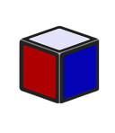
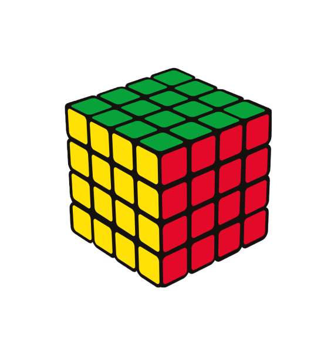
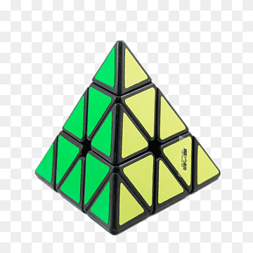
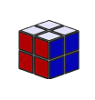

1x1 Cube
Love the Rubiks Cube but can't solve it? Then this is the perfect 'puzzle' for you! The 1x1 can always be solved and you dont even need to twist or turn it!
4x4 Cube
Love the Rubiks Cube but want a harder challenge? The 4x4 is the perfect step up in difficulty and can still be fun to learn even if you dont know how to solve a rubiks cube!
Pyraminx
Not exactly a cube but still a fun puzzle, with some time anybody should be able to solve this puzzle even if you twist and turn randomly!
2x2 Cube
Do you feel that the rubiks cube is too hard?